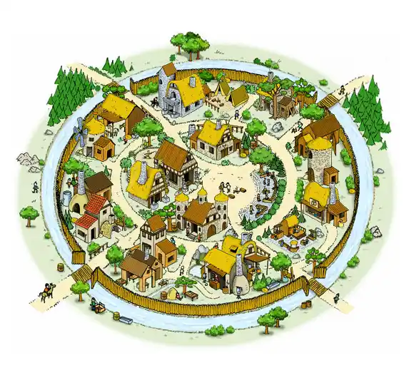
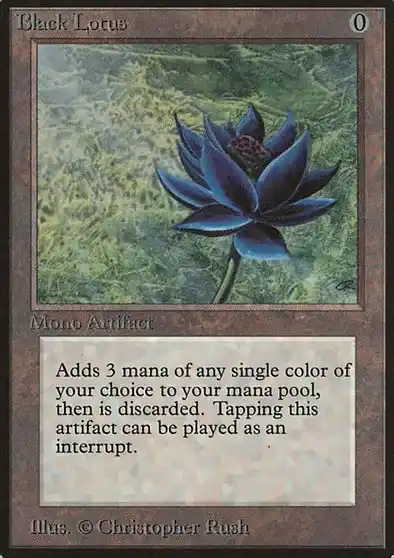
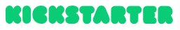
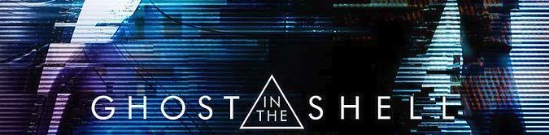

El Pay-to-Win en juegos de mesa
Estimada tripulación:
Llevo unos días dándole vueltas al framework DDE. Me gustaría integrarlo de forma que pudiera aplicarse al análisis y crítica de juegos de mesa. Mi intención es usarlo para construir opiniones fundamentadas que vayan un paso más allá del simple "me gusta" o "no me gusta". Pero, mal que me pese, parece que no voy a poder adaptarlo; hay puntos que creo que no son aplicables y otros que no encajan con el análisis que busco; por suerte, hay algunos que sí me parecen realmente interesantes y atractivos. En cualquier caso, le dedicaré su propia entrada más adelante.
El framework DDE está orientado en principio a servir como estructura para el diseño de videojuegos; es decir, forma parte de las Creative Industries (el equivalente empresarial contemporáneo del término "Industria Cultural"). Y fue precisamente esto lo que me llevó a pensar en las diferencias entre cómo se comercializan los juegos de mesa con respecto a los juegos digitales. Y me vino a la cabeza el Pay-to-Win (Ptw en adelante).

En el mundo del videojuego es un término muy común y relativamente antiguo (¡Hola Travian!): un jugador puede obtener una ventaja competitiva en el juego pagando dinero real: personajes, habilidades o recursos exclusivos y ventajosos para quienes se rascan más el bolsillo. Mi primera reacción fue que en los juegos de mesa esto no ocurría. Sin embargo, no es así: quizá no sea tan directo, pero existen prácticas que todos conocemos que se acercan bastante a esta idea.
El Ptw en la cara competitiva de los juegos de mesa
Un torneo de juegos de mesa, en especial en los juegos con assets coleccionables, es una competición organizada donde los participantes se enfrentan entre sí siguiendo reglas específicas. En los torneos de cartas CCG, como los de Magic: The Gathering, los jugadores construyen mazos con cartas de diferentes niveles de rareza (comunes, raras, únicas o legendarias) para enfrentarse entre sí. Montar un mazo competitivo requiere una inversión significativa (¿¡cuánto llegó a costar un Black Lotus!?); es decir, existe un mercado donde se pueden adquirir esas cartas para lograr esa ventaja.
En algunos eventos se buscan reglas extra para nivelar las posibilidades entre los participantes y contrarrestar el desequilibrio de este tipo de Ptw. Los más conocidos pueden ser el Draft (los participantes abren sobres, eligen una carta y pasan el resto, construyendo su baraja en el momento), o la limitación del uso de ciertas cartas: en el formato Pauper solo se pueden usar cartas comunes.

Otra forma en la que se expresa el Ptw a nivel de torneo es a través de las expansiones. Pensemos en un juego como X-Wing: no solo añade naves nuevas, sino también pilotos con habilidades muy superiores a las del juego base. Los jugadores que no adquieren estas novedades tienen menos opciones y parten con desventaja frente a quienes sí las poseen.
La tercera variante relacionada con el Ptw en los torneos ocurre cuando las expansiones cambian por completo la forma de jugar. El ejemplo perfecto es Netrunner en su versión de Fantasy Flight Games. Quienes no seguían el ritmo de los lanzamientos se quedaban atrás, ya que las cartas entraban o salían de la legalidad según el momento en el que se encontrase el entorno competitivo.
Contenido exclusivo
Algunos juegos de mesa también han experimentado con modelos de contenido exclusivo, algo habitual en las campañas de micromecenazgo (o macro-mecenazgo, dadas las cantidades que se llegan a recaudar). Es común poder obtener componentes que luego no llegarán a las tiendas; solo se entregarán (ya sea de forma gratuita o abonando un extra) a los mecenas. La empresa CMON, por ejemplo, era conocida por sus Early birds o las famosas cajas de miniaturas exclusivas en Kickstarter.
¿Y qué hay de la deluxificación?
Esto nos lleva a otra de las grandes tendencias del mercado actual: la deluxificación. Consiste en introducir mejoras estéticas en los componentes del juego que, en principio, no alteran las mecánicas base. Lo que se busca es potenciar la experiencia y fomentar la inmersión del jugador. Abundan las campañas de micromecenazgo donde se ofrece este tipo de material premium.

El primer caso que me viene a la cabeza es el de Carson City: en su campaña podías adquirir la versión normal, corriente y moliente, o la versión Deluxe con piezas de madera. Más allá del mecenazgo, hoy en día varias compañías independientes de las editoriales ofrecen insertos de madera; están diseñados para organizar los componentes dentro de la caja y agilizar notablemente el despliegue (mise en place), mejorando la comodidad general. Prueba a jugar y luego recoger una partida de Gloomhaven sin un inserto adecuado; se puede hacer eterno.
¿Es esto Pay-to-Win? En sentido estricto, no. No estamos pagando para obtener una ventaja a nivel de diseño de reglas frente a los rivales en la mesa. Estamos modificando la experiencia de juego según se entiende en el DDE. Afectamos a la percepción emocional y sensorial (la Experiencia), dejando intacto el motor del juego (el Código). La diferencia clave es un cambio de status de juego: mientras el Ptw rompe las reglas del juego para otorgar victorias (y gloria al vencedor), la deluxificación modifica la capa de la experiencia y la percepción del jugador. En otras palabras: montar en mesa la versión a full con minis frente a la edición de tienda no te da mejores tiradas en los dados, pero sí cambia la percepción de la partida.
¿Juegas o pagas por ganar?
Quizás la pregunta que nos deberíamos hacer es si usar el Ptw es mezquino, dado que lo que hace es desnaturalizar la partida, ya sea digital o en mesa. Una de las cosas que definen los encuentros de juego es la equidad entre participantes: garantizar que todos tengan las mismas oportunidades de competir, donde el factor diferencial sea la toma de decisiones y no el tamaño de la cartera. Cuando el dinero rompe esa equidad, el pacto social que sostiene la partida se desmorona y el juego, sencillamente, deja de tener sentido.
Además, este formato de venta genera una especie de obsolescencia programada. En X-Wing o Netrunner (en su momento), el Ptw no es un pago único: es una suscripción obligatoria para mantenerte en cabeza. No solo pagas para ganar, pagas para que el propio mercado no te expulse del entorno competitivo mediante la rotación de cartas o el aumento de poder de las nuevas naves y pilotos. Si no pasas por caja, caduca tu capacidad de competir y tu status de jugador. Sin embargo, ante esta presión de la industria, parece que no todo está perdido. Como mencionaba al principio con los formatos Draft o Pauper en Magic, son los jugadores y a veces las editoriales (con el objetivo de adaptarse a las demandas de sus clientes) quienes se ven obligados a inventar reglas y formatos nuevos para proteger al juego de su propio canibalismo.
Casi sin que yo lo quisiera, parece que el framework DDE sí puede resultar útil para el análisis de los juegos de mesa. Al separar el código de la experiencia/percepción del jugador, podemos entender perfectamente dónde se rompe el sistema. Pero, al mismo tiempo, al centrarnos más en las características del encuentro de juego, podemos ahorrarnos el definir una agencia previa al sujeto-jugador. El individuo no llega como jugador a la mesa. Es al revés: el individuo se transforma en sujeto-jugador a través del acto de jugar y de la relación con los demás; es la propia experiencia de la partida la que lo constituye como tal.
Por eso el Ptw resulta tan dañino: porque pervierte ese proceso de transformación. Si el acto de pagar altera las condiciones de la partida, el sujeto-jugador ya no se forma compitiendo o compartiendo un espacio de equidad con los demás, sino introduciendo ventajas y características externas que no estaban previstas en el diseño original del encuentro de juego.

¡Seguimos en ruta!